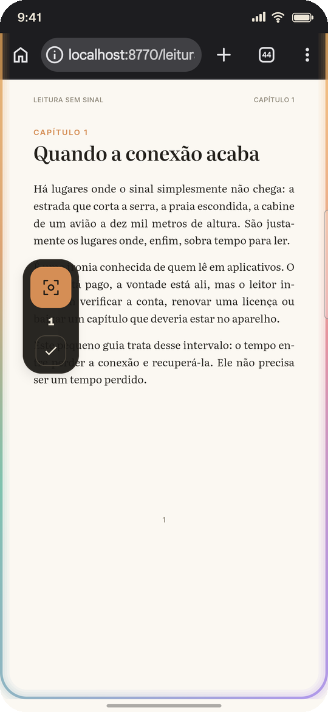
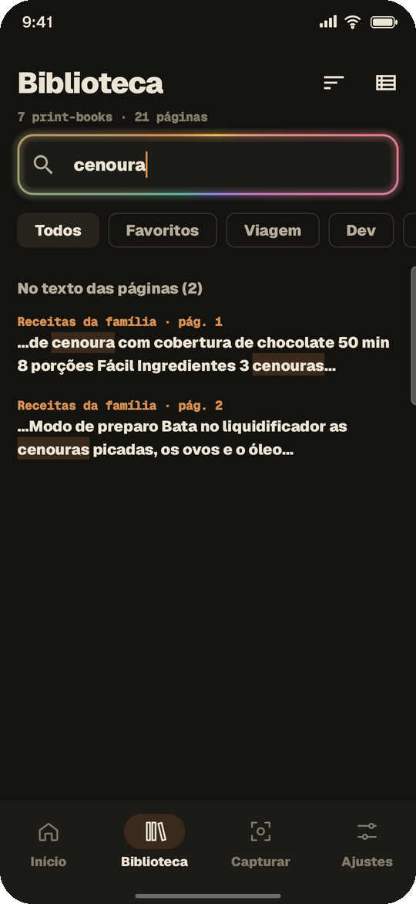
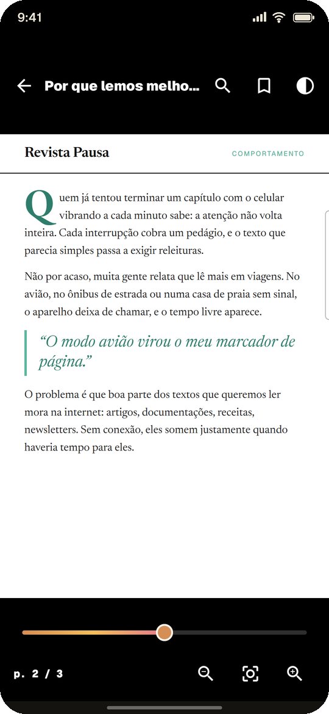

Leitura
Páginas dos livros que você já tem nos seus apps de leitura, para continuar lendo num voo, no metrô ou onde não houver sinal.
Livros, artigos, receitas, tutoriais e documentações viram coleções organizadas, pesquisáveis e disponíveis sem internet. Direto dos apps que você já usa.

Do capítulo que você quer terminar na viagem à receita da família: se aparece na sua tela, pode virar uma página organizada no print-book.
Páginas dos livros que você já tem nos seus apps de leitura, para continuar lendo num voo, no metrô ou onde não houver sinal.
Seu caderno de receitas sempre à mão, com busca pelo ingrediente, até na cozinha sem Wi-Fi.
Documentações, artigos e tutoriais reunidos por assunto, prontos para consultar quando você precisar.
Guias, referências e anotações que você consulta sempre, em coleções com capa, favoritos e marcadores.
Coleções de imagens, referências visuais e inspirações, do seu jeito.
Funciona sobre qualquer app que permita captura de tela: leitores, navegador, PDFs e materiais de estudo.
Você continua no app em que está. O print-book trabalha numa bolha discreta por cima dele.
Em qualquer app que permita captura de tela: o leitor, o navegador, o PDF.
A página é guardada na hora. No modo semiautomático, é só ir virando: o app captura sozinho quando a tela para.
Tudo organizado em coleções, com busca pelo texto e leitura confortável, mesmo offline.

O texto das suas capturas é reconhecido no próprio aparelho, sem internet. Digite "aproximacao" e o print-book encontra "aproximação".

Cada captura vira um print-book com capa, progresso e lugar certo na sua biblioteca.

A interface se recolhe para dar espaço ao conteúdo, e você retoma de onde parou.
Tudo fica no seu aparelho: sem conta, sem servidor e sem nuvem. As capturas ficam dentro do app, fora da galeria, e podem ser apagadas a qualquer momento.
O print-book é um organizador pessoal para conteúdos aos quais você já tem acesso. Ele guarda apenas o que aparece na sua tela, respeita os apps que bloqueiam captura e não contorna nenhuma proteção.
O print-book está chegando à Google Play. Enquanto isso, acompanhe o projeto no GitHub.